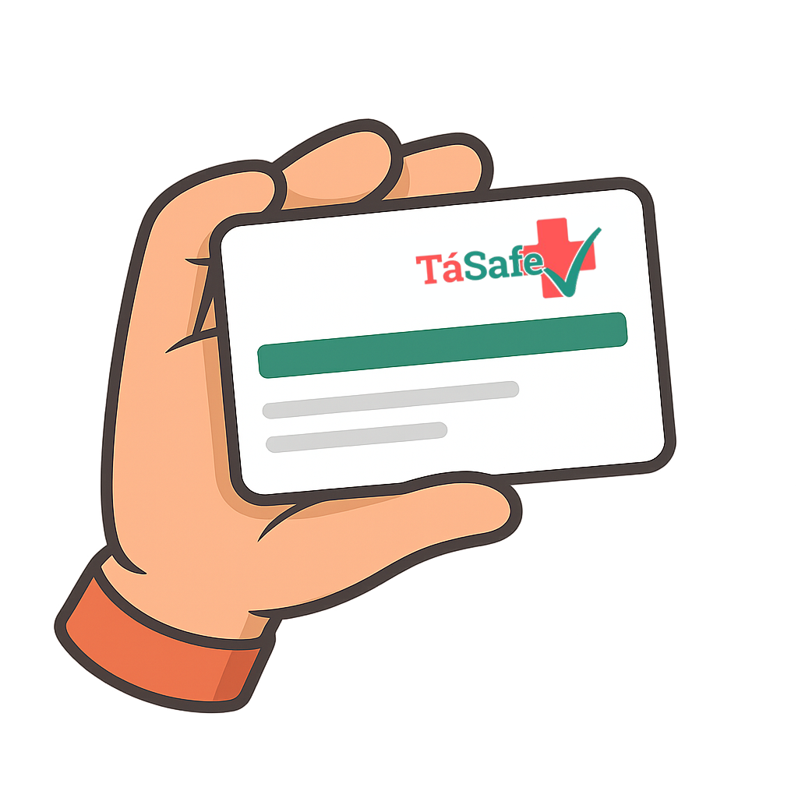

TáSafe✅
🪪 Sua carteirinha de saúde no mesmo formato dos seus principais documentos: rápida de gerar, fácil de imprimir e essencial em emergências.
GERAR MINHA CARTEIRINHA!
Pronta em poucos minutos:
Você pode editar e baixar ou imprimir diretamente!